印度¶
安装¶
:ref:`安装<general/install>`以下模块，以获得印度本地化的所有功能：
名称 |
技术名称 |
描述 |
|---|---|---|
印度—会议 |
|
默认:ref: |
印度电子发票 |
|
|
印度电子运单 |
|
|
印度 - GSTR India 电子文件 |
|
|
Indian - Accounting Reports |
|
|
印度 - 采购报告（GST） |
|
印度 GST 采购报告 |
印度 - 销售报告（GST） |
|
印度 GST 销售报告 |
Indian - Stock Report(GST) |
|
Indian GST Stock report |

电子发票系统¶
Odoo 符合**印度商品和服务税（GST）电子发票系统**的要求。
设置¶
NIC 电子发票注册¶
You must register on the NIC e-Invoice portal to get your API credentials. You need these credentials to configure your Odoo Accounting app.
Log in to the NIC e-Invoice portal by clicking Login and entering your Username and Password;
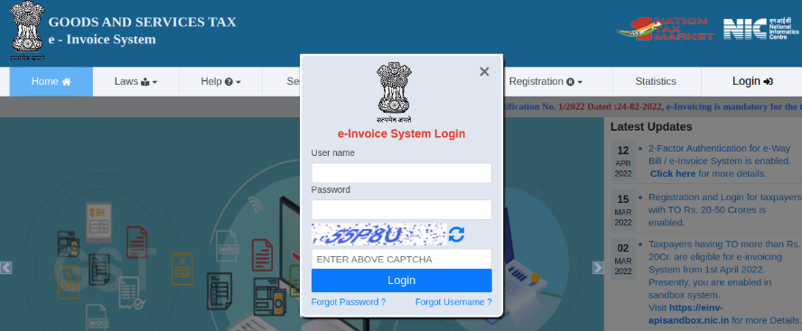注解
If you are already registered on the NIC portal, you can use the same login credentials.
From the dashboard, go to ;
After that, you should receive an OTP code on your registered mobile number. Enter the OTP code and click Verify OTP;
Select Through GSP for the API interface, set Tera Software Limited as GSP, and type in a Username and Password for your API. Once it is done, click Submit.
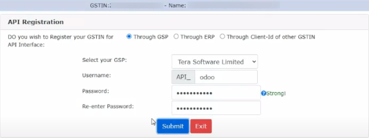
Odoo 中的配置¶
To enable the e-Invoice service in Odoo, go to , and enter the Username and Password previously set for the API.
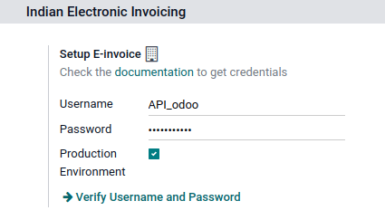日记账¶
要自动向 NIC 电子发票门户网站发送电子发票，您必须首先配置您的 销售 日记账，方法是进入 ，打开您的 销售 日志，在 高级设置 选项卡的 电子数据交换 下，启用 电子发票（IN） 并保存。
工作流¶
Invoice validation¶
发票一经验证，顶部就会显示一条确认信息。一段时间后，Odoo 会自动将已验证发票的 JSON 签名文件上传到 NIC 电子发票门户网站。如果您想立即处理发票，请点击 立即处理。

注解
您可以在沟通栏附件中找到经 JSON 签名的文件。
您可以在发票的 EDI 文件 选项卡或 电子发票 字段下检查文档的 :abbr:`EDI（电子数据交换）`状态。
开票报告PDF¶
发票一经验证和提交，即可打印发票 PDF 报告。报告包括 IRN（发票参考号）、:guilabel:`Ack. No`（确认编号）、:guilabel:`Ack.Date`（确认日期）和二维码。这些证明发票是有效的财务文件。
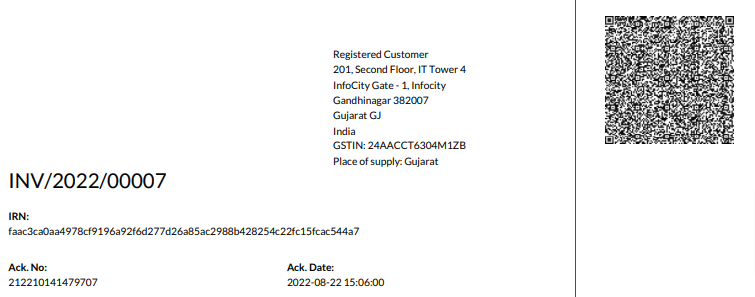取消电子发票¶
如果您想取消电子发票，请转到发票的 其他信息 选项卡，填写 取消原因 和 取消备注 字段。然后，点击 请求 EDI 取消。电子发票开具`字段的状态将变为 :guilabel:`取消。

注解
If you want to abort the cancellation before processing the invoice, then click Call Off EDI Cancellation.
一旦您请求取消电子发票，Odoo 将自动向 NIC 电子发票门户网站提交 JSON 签名文件。如果您想立即处理发票，可点击 立即处理。
GST 电子发票验证¶
提交电子发票后，您可以从 GST 电子发票系统网站上验证发票是否已签署。
从附件中下载 JSON 文件。它可以在相关发票的沟通栏中找到；
打开`NIC 电子发票门户网站 <https://einvoice1.gst.gov.in/>`_，进入 ；
选择 JSON 文件并提交；

如果文件已签署，则会显示一条确认信息。

电子货运单¶
设置¶
Odoo 符合**印度商品和服务税（GST）电子运单系统**的要求。
API registration on NIC E-Way bill¶
You must register on the NIC E-Way bill portal to create your API credentials. You need these credentials to configure your Odoo Accounting app.
Log in to the NIC E-Way bill portal by clicking Login and entering your Username and Password;
From your dashboard, go to ;
Click Send OTP. Once you have received the code on your registered mobile number, enter it and click Verify OTP;
Check if Tera Software Limited is already on the registered GSP/ERP list. If so, use the username and password used to log in to the NIC portal. Otherwise, follow the next steps;

Select Add/New, select Tera Software Limited as your GSP Name, create a Username and a Password for your API, and click Add.

Odoo 中的配置¶
要设置电子运单服务，请访问 ，然后输入您的 用户名 和 密码 。
工作流¶
发送电子运单¶
您可以点击 发送电子运单 手动发送电子运单。要在发票或账单确认后自动发送电子运单，请在 销售或采购日记账 <india/e-invoicing-journals>`中启用 :guilabel:`电子运单（IN）。

Invoice validation¶
Once an invoice has been issued and sent via Send E-Way bill, a confirmation message is displayed.
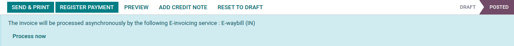注解
您可以在沟通栏附件中找到经 JSON 签名的文件。
Odoo automatically uploads the JSON-signed file to the government portal after some time. Click Process now if you want to process the invoice immediately.
开票报告PDF¶
You can print the invoice PDF report once you have submitted the E-Way bill. The report includes the E-Way bill number and the E-Way bill validity date.

E-Way bill cancellation¶
If you want to cancel an E-Way bill, go to the E-Way bill tab of the related invoice and fill out the Cancel reason and Cancel remarks fields. Then, click Request EDI Cancellation.
重要
Doing so cancels both the e-Invoice (if applicable) and the E-Way bill.

注解
If you want to abort the cancellation before processing the invoice, click Call Off EDI Cancellation.
Once you request to cancel the E-Way bill, Odoo automatically submits the JSON-signed file to the government portal. You can click Process Now if you want to process the invoice immediately.
Indian GST Return filing¶
Enable API access¶
To file GST Returns in Odoo, you must first enable API access on the GST portal.
Log into the GST portal by entering your Username and Password, and go to My Profile on your profile menu;
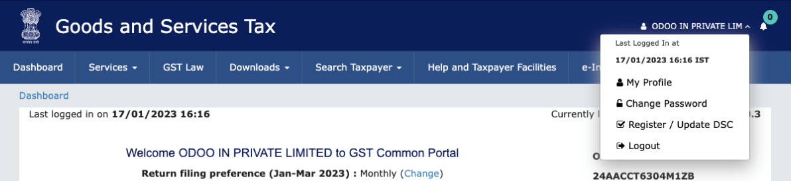Select Manage API Access, and click Yes to enable API access;

这样做将启用 持续时间 下拉菜单。选择您偏好的 持续时间 并点击 确认。
Odoo 中的印度 GST 服务¶
在商品及服务税门户网站上启用 API 访问<india/gstr_api>`后，您就可以在 Odoo 中设置 :guilabel:`印度 GST 服务。
进入 并输入 GST 用户名。点击 发送 OTP，输入代码，最后点击 验证。

File-in GST Return¶
当 印度 GST 服务 配置完成后，您就可以提交消费税申报表了。进入 并创建一个新的 GST 申报期 （如果不存在）。在 Odoo 中，GST 申报分**三步**完成：
注解
报税周期 可以根据用户需要 配置 。
发送 GSTR-1¶
The user can also get details to be submitted in GSTR-1 in Spreadsheet view by clicking on Generate;
如果**GSTR-1**报告正确，则点击 推送至 GSTN，将其发送至**GST 门户**。GSTR-1`报告的状态将变为:guilabel:`发送；

几秒钟后，GSTR-1 报告的状态将变为 等待状态。这意味着 GSTR-1 报告已发送到 GST 门户 并正在 GST 门户 上验证；

Once more, after a few seconds, the status either changes to Sent or Error in Invoice. The status Error in Invoice indicates that some of the invoices are not correctly filled out to be validated by the GST portal;
If the state of the GSTR-1 is Sent, it means your GSTR-1 report is ready to be filed on the GST portal.

如果**GSTR-1**的状态为:guilabel:
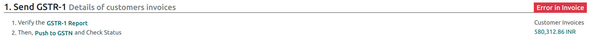发票出错，则可在:guilabel:日志备注`中检查发票是否出错。问题解决后，用户可点击 :guilabel:`推送到 GSTN再次在**GST 门户**上提交文件。

Click Mark as Filed after filing the GSTR-1 report on the GST portal. The status of the report changes to Filed in Odoo.
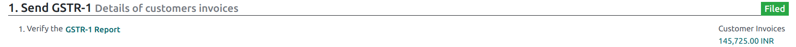
Receive GSTR-2B¶
Users can retrieve the GSTR-2B Report from the GST portal. This automatically reconciles the GSTR-2B report with your Odoo bills;
Click Fetch GSTR-2B Summary to retrieve the GSTR-2B summary. After a few seconds, the status of the report changes to Waiting for Reception. This means Odoo is trying to receive the GSTR-2B report from the GST portal;
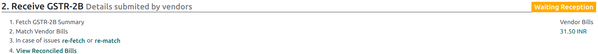Once more, after a few seconds, the status of the GSTR-2B changes to the Being Processed. It means Odoo is reconciling the GSTR-2B report with your Odoo bills;

Once it is done, the status of the GSTR-2B report changes to either Matched or Partially Matched;
If the status is Matched:

If the status is Partially Matched, you can make changes in bills by clicking View Reconciled Bills. Once it is done, click re-match.
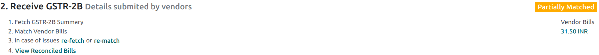 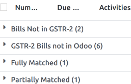
GSTR-3 报告¶
GSTR-3 报告是**销售额**和**采购额**的月度汇总。该报表通过提取**GSTR-1**和**GSTR-2**中的信息自动生成。
用户可通过点击 GSTR-3 报告 将**GSTR-3**报告与**GST门户网站上提供的**GSTR-3**报告进行比较，以验证两者是否匹配；
Once the GSTR-3 report has been verified by the user and the tax amount on the GST portal has been paid. Once paid, the report can be closed by clicking Closing Entry;

In Closing Entry, add the tax amount paid on the GST portal using challan, and click POST to post the Closing Entry;
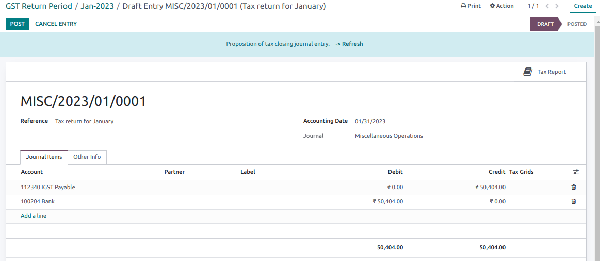Once posted, the GSTR-3 report status changes to Filed.

Tax reports¶
GSTR-1 report¶
The GSTR-1 report is divided into sections. It displays the Base amount, CGST, SGST, IGST, and CESS for each section.
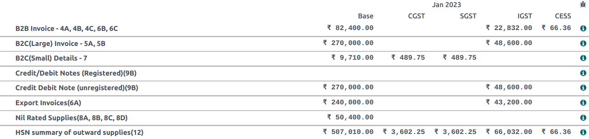
GSTR-3 报告¶
The GSTR-3 report contains different sections:
Details of inward and outward supply subject to a reverse charge;
Eligible ITC;
Values of exempt, Nil-rated, and non-GST inward supply;
Details of inter-state supplies made to unregistered persons.